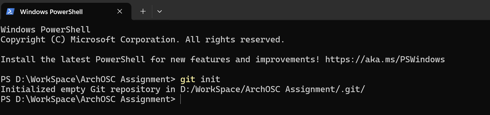

Introduction
In this lab I learned how to create a local Git repository, connect it to GitHub and publish a website using GitHub Pages.
Creating a Local Repository
I used the git init command inside the terminal to create a local repository.

Connecting Remote Repository
I connected my local project to my GitHub repository using git remote add origin.

Section 5 — Updating the Repository
I created a simple HTML webpage that displayed my name in the center of the page.

Git Commit
I used git add and git commit commands to save my project changes.

Pushing to GitHub
I used git push to upload my project files to GitHub.

GitHub Pages Deployment
I enabled GitHub Pages to publish my portfolio online.

Reflection
This lab helped me understand version control, repositories and website deployment using GitHub.